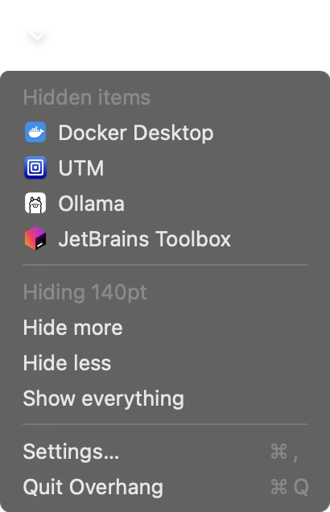
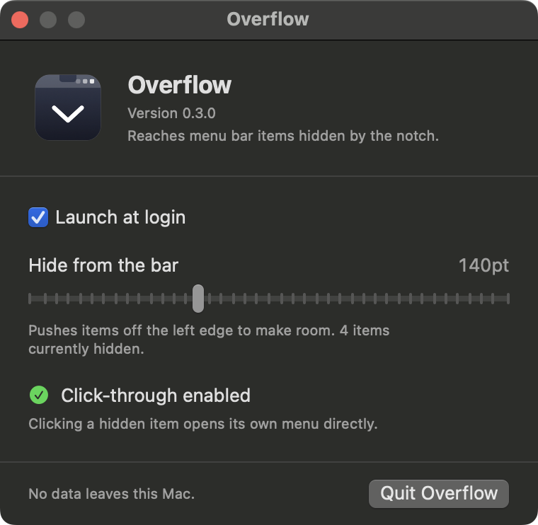

What it does
Three things, and nothing else.
Finds what is hidden
Lists every status item macOS dropped, each with the icon of the app that owns it.
Opens them normally
Click an entry and that item's own menu opens, just as if you had clicked it in the bar.
Asks for nothing
Runs without a single permission. Screen Recording is never requested. Nothing leaves your Mac.
A closer look
One control in the bar, everything else out of the way.

Everything that went missing
One click lists every status item macOS stopped drawing, each with the icon of the app that owns it. Pick one and its own menu opens.

Three settings, no more
Launch at login, how much to hide from the bar, and whether click through is enabled. The whole app fits in one window.
Install
Download the app
- Download Overhang.zip Built for macOS 14 and later on Apple silicon. Under 2 MB.
-
Move it to Applications
Unzip the download, then drag
Overhang.appinto your Applications folder. - Right click, then choose Open Overhang is signed but not notarized, so macOS asks for confirmation the first time. It will not ask again.
- Turn on click through Optional. Grants Accessibility so a hidden item opens its own menu when you click it. Overhang works without it.
Build from source
Needs Xcode 15 or later and XcodeGen.
brew install xcodegen git clone https://github.com/nicglazkov/overhang.git cd overhang make install
Builds, signs ad hoc, and copies the app into
Applications. Run make test to check the suite first.
FAQ
Does Overhang need any permissions?
No. Finding, listing and hiding items all work with nothing granted. Accessibility is optional and does one thing: it lets a hidden item open its own menu when you click it. Decline it and Overhang brings the item back into the bar for eight seconds so you can click it yourself.
Why does it never ask for Screen Recording?
Other menu bar managers need it because they redraw other apps' status item images, and capturing those pixels requires permission. Overhang draws each app's own bundle icon instead, so the question never arises.
Why is the first launch blocked?
The app is signed with a developer certificate but is not notarized, so macOS asks for confirmation once. Right click the app, choose Open, and it will not ask again.
Some hidden items do not respond when I click them.
Items built on a standard menu open directly. A few apps handle the mouse event themselves and ignore anything else, so Overhang cannot press them. Those fall back to revealing the item in the bar so you can click it by hand. This depends on how the app was built, not on where its icon sits.
There is a gap in my menu bar now.
Hiding works by pushing items past the edge of the screen, so the space they occupied has to go somewhere. Lower the hide amount in Settings to shrink it, or set it to zero.
Do I need a Mac with a notch?
No. The notch makes the problem worse by removing usable space, but any full menu bar drops items. Overhang behaves the same on external displays and older Macs. See requirements for detail.
What does it cost?
Nothing. Overhang is free and MIT licensed, and the full source is on GitHub.
Before you install
The details, on their own pages.
Privacy Policy
What Overhang collects, which is nothing, and what the app reads on your Mac.
Security Policy
Signing, distribution, what the optional permission allows, and how to report a problem.
Requirements
Supported systems, display compatibility, build requirements and known limitations.